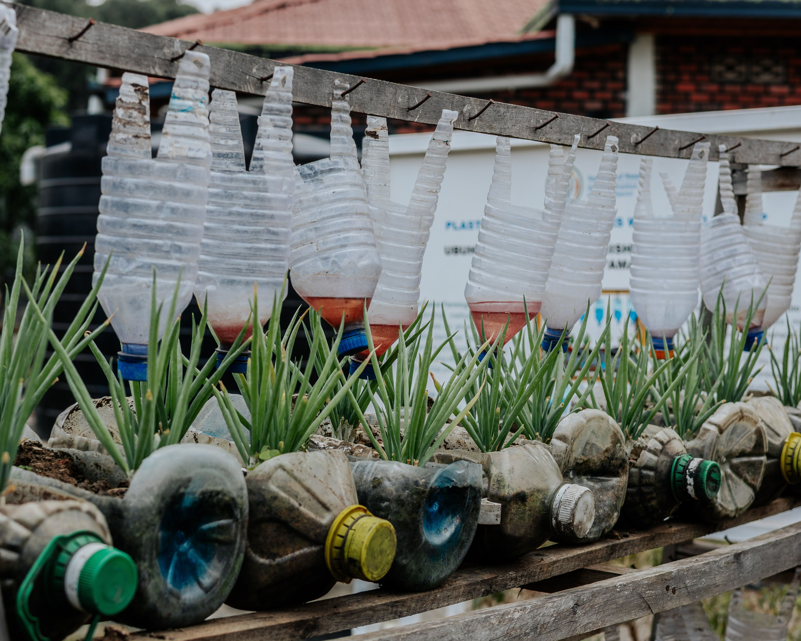

Como fazer uma horta com materiais reaproveitados?
Muitos não sabem como fazer uma horta, mas ao contrário do que pensam, não há necessidade de comprar vasos. As grandes cidades são verdadeiros depósitos de materiais descartados. O chamado "lixo" pode ser uma riqueza para quem sabe observar e está disposto a recondicionar materiais. Vários tipos de resíduos podem ser reaproveitados, com benefícios tanto para a cidade, que fica mais limpa, quanto para o individuo e o seu bolso.

Saiba mais!